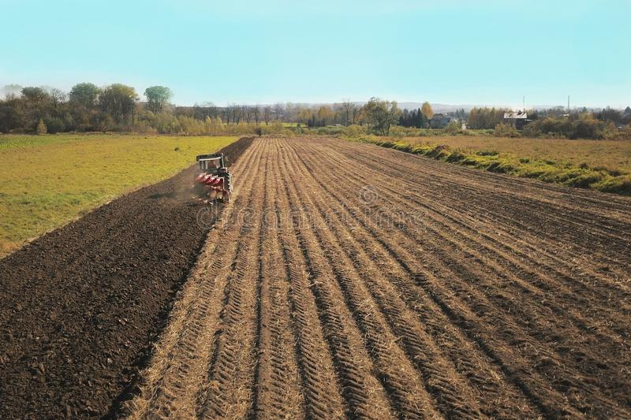
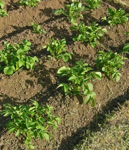
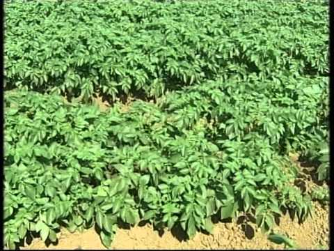
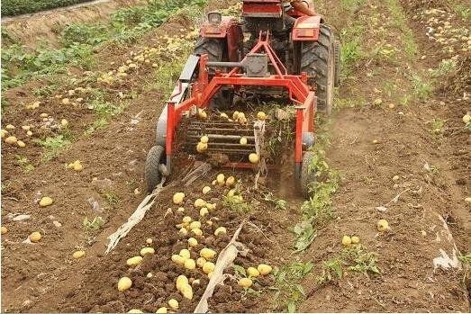
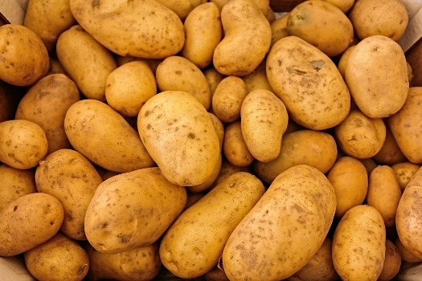

आलू की खेती और रोग रोकथाम





आलू की खेती के लिए अच्छी जलवायु समशीतोष्ण मानी जाती है और आलू की फसल समशीतोष्ण की फसल है
तथा उत्तर प्रदेश में आलू की खेती उपोषणीय जलवायु की दशाओ में रबी की मौसम में की जाती है यानी आलू की खेती अक्टूबर से नवंबर के माह में की जाती है
आलू की खेती के लिए जीवाश्म युक्त बलुई – दोमट मृदा अच्छी मानी जाती है और भूमि में अच्छी जल की निकासी होनी चाहिए
आलू की खेती के लिए क्षारीय तथा जल भराव अथवा खड़े पानी वाली भूमि कभी न चयन करे आलू की खेती के लिए बलुई दोमट
और जल निकासी वाली भूमि अच्छी मानी जाती है आलू की खेती के लिए खेत की जुताई लगभग 3-4 बार कल्टीवेटर से जुताई करनी चाहिए वर्तमान में
अब आलू की खेती के लिए खेत की जुताई रोटावेटर से भी की जाती है
आलू की खेती करने के लिए खेत की पलेवा जरूर कर लेनी चाहिए जिससे आलू की पैदावार अधिक होती है । तथा प्रतेक जुताई के बाद पाटा जरूर लगवा लेना चाहिए ।
आलू की खेती 15 से 30 टन प्रति हेक्टेयर की दर से सदी गोबर की खाद खेत में डालकर जीवाश्म की मात्रा को बढ़ाया जा सकता है
और जीवाश्म पदार्थ की मात्रा बढ़ने से आलू की कंदो को वृद्धि करने सहायक होगी तथा आलू की बीज की बुआई करने से पहले
जब खेत की जुताई करते है तो उसी वक्त सदी गोबर की खाद डालकर जुताई करवा देना चाहिए फेर उसके बाद बीज की बुआई करनी चाहिए ।
आलू की बीज की बुआई
आलू की बीज की बुआई करते समय किसानो को इस बात का ध्यान देना चाहिए की खेत में हल्की नमि होनी चाहिए
आलू की बीज को 3 से 4 भागो में काट लेना चाहिए और आलू को इस प्रकार काटना चाहिए
जिसमे प्र्तेक भाग में आलू की आँखे होना चाहिए आलू के बीज को कुलो में बोया जाता है कुलो में हल्की हल्की मिटटी
से डालकर एक मेड बना दी जाती है इस आधुनिक समय में आलू की बुआई पोटेटो प्लांटर से किया जा रहा है जिसमे कम समय और मेहनत से हो जा रहा है ।
आलू की खेती में किट , खरपतवार एवं रोग
आलू की फसल में खरपतवारो को नस्ट करने के लिए समय समय पर उसकी निराई गुड़ाई करनी चाहिए
व समय पर आलू के कुलो पर मिटटी को चढ़ाना चाहिए आलू की फसल में बहुत से रोग व कीट लगते है
और वह कई प्रकार की हनिया करते है जिससे आलू की विर्धि दर उपज कम हो जाती है निचे कुछ प्रमुख रोगो के बारे में बताया गया है ।
आलू की फसल में पिछेता झुलसा रोग
यह रोग आलू की फसल में फफूंद से लगने वाली एक भयानक बीमारी है इस बीमारी की चपेट में आलू की पत्ती ,
तने तथा कंदो यानी आलू की सभी भागो को ग्रसित कर देता है यह मौसम के बार बार बदलने से इस बीमारी का प्रकोप ज्यादा बढ़ जाता है
इस बीमारी के समय आप फसल में सिंचाई करना बंद कर दे और आवश्यक होने पर ही हल्की हल्की सिंचाई करनी चाहिए
यदि फसल में लक्षण दिखाई दे रहा है तो आप उसके रोकथाम के लिए 0.20 प्रतिशत मैंकोजेब दवा के घोल का छिड़काव 8 से 10 दिन के अंतराल पर क्र देना चाहिए ।
आलू की फसल में अगेता झुलसा रोग
इस बीमारी में आलू की फसल पर बहुत ज्यादा ही बुरा प्रभाव पड़ता है अगेता झुलसा रोग में आलू की पत्तिया और कंदो पर बीमारी का प्रकोप दीखता है
इस बीमारी का लक्षण निचली तथा पुराणी पत्तियों पर छोटे गोले अंडाकार भूरे धब्बो के रूप में दिखाई देता है
इस बीमारी के निवारण के लिए 0.3 % कॉपर आक्साइड क्लोराइड फफूंदनाशक के घोल का प्रयोग करे ।
आलू की पत्ती मुड़ने वाला रोग
यह एक वायरस बीमारी है यह वायरस के द्वारा फैलती है इस बीमारी के निवारण के लिए रोग रहित बीज ही बोना चाहिए और इस वायरस के वाहक एफिड की रोकथाम
दैहिक कीटनाशक या फास्फोमिडान 0.04 % घोल में मिथाइलाक्सीडीमितं या डाईमिथोएट का 0.1 % घोल बनाकर 1 से 2 बार छिड़काव कर देना चाहिए ।
आलू की खेती में दीमक
आलू की फसल में दीमक का प्रकोप ज्यादातर अगेती फसलों में होता है इस रोग से प्रभावित आलू की पत्तिया निचे की और मूड जाती है दीमक की रोकथाम के लिए
डाइकोफाल 18.5 इ सी या क्यूनालफास 25 इ सी की 2 लीटर मात्रा प्रति हेक्टेयर की दर से सिंचाई के पानी के साथ प्रयोग करे और 7 से 10 दिनों के अंतराल पर ।